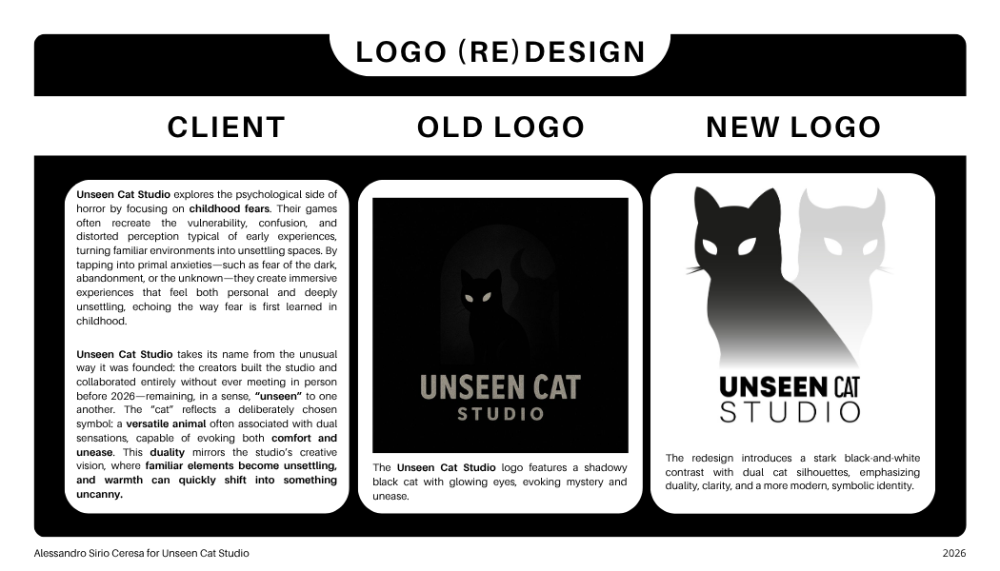
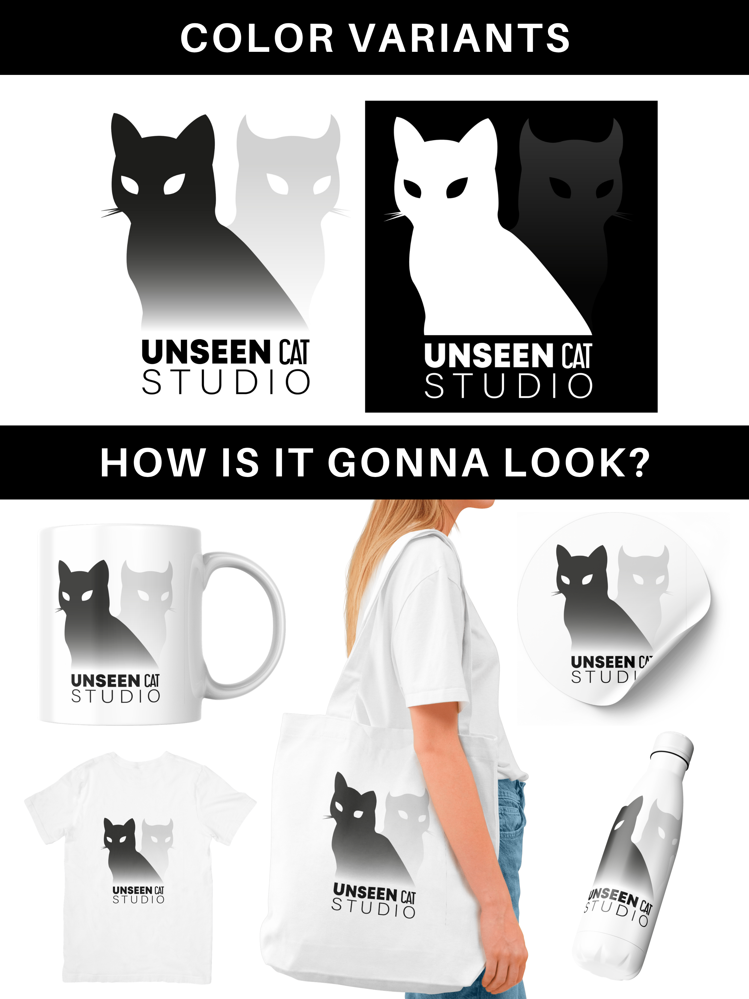
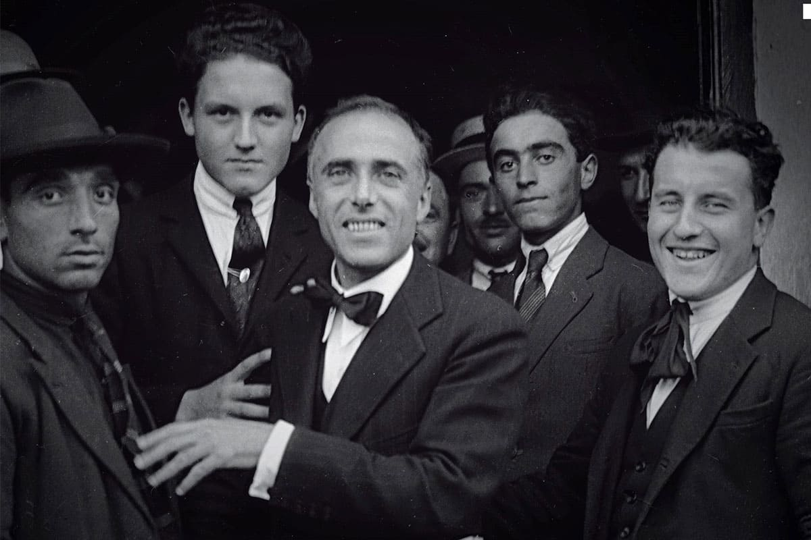
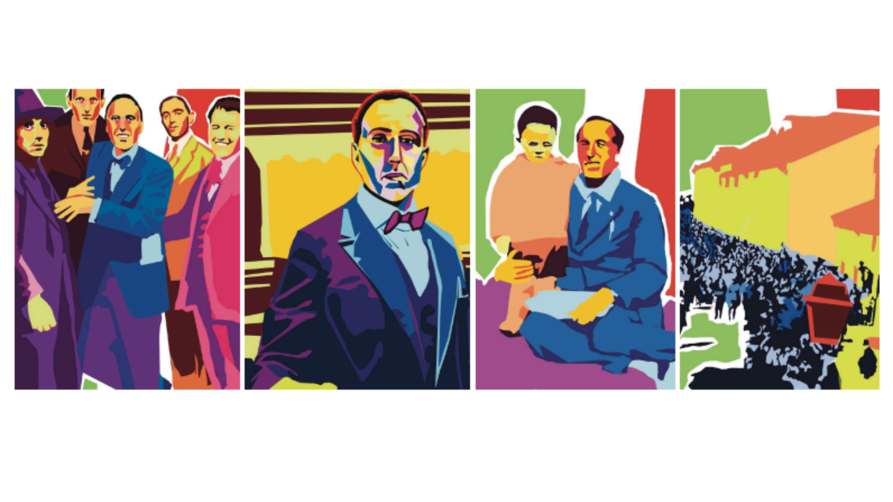
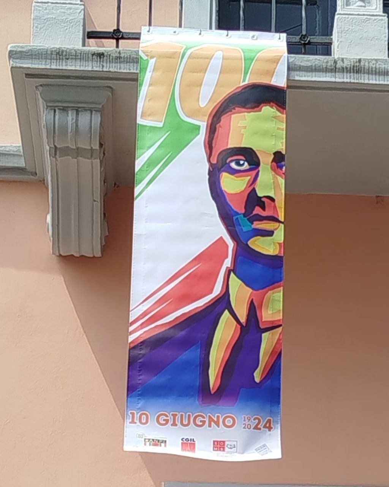

The Problem
The original identity for Unseen Cat Studio effectively captured the studio’s thematic focus on psychological horror, but it fell short in practical application.
The logo relied heavily on dark tones, low contrast, and intricate details that became almost indistinguishable at smaller sizes or on different backgrounds.
This lack of visual clarity made it difficult to recognize quickly, especially in digital environments where immediacy and legibility are essential.
Additionally, the subtlety of the design, while conceptually interesting, reduced its impact and memorability,
limiting the brand’s ability to stand out in a saturated market.
As a result, the identity struggled to communicate both the studio’s personality and its professional presence across platforms.

The Idea
The redesign is rooted in the concept of duality—balancing opposing forces such as comfort and unease, visibility and obscurity, reality and the subconscious.
This idea reflects the emotional tension typical of psychological horror, where what is hidden can be more disturbing than what is revealed.
The goal was to visually translate this contrast into a clear and immediate graphic language, creating a symbol that feels both familiar and unsettling.
By emphasizing this interplay, the new direction aims to evoke curiosity and subtle discomfort,
drawing the viewer in while maintaining a sense of ambiguity that aligns with the studio’s narrative style.

The Solution
The final design embraces a high-contrast visual system to ensure strong visibility and adaptability across all formats.
The logo has been simplified into a clean, recognizable silhouette that retains its character even at reduced sizes, improving scalability for digital and print applications.
By reducing unnecessary details and focusing on bold shapes, the identity becomes more versatile and easier to reproduce without losing its essence.
The contrast between light and dark elements reinforces the theme of duality while enhancing readability and impact.
Overall, the redesign achieves a balance between aesthetic coherence and functional clarity,
resulting in a distinctive and flexible identity that better represents Unseen Cat Studio in a competitive visual landscape.

The Problem
The project was developed during my Civil Service experience at SOMS Settimo Torinese,
in collaboration with CGIL Settimo Torinese and ANPI Settimo Torinese, on the occasion of the centenary
of Giacomo Matteotti’s assassination in 1924.
One of the main challenges of the project was the progressive detachment of younger generations
from historical and political memory. Figures such as Matteotti, despite their central role in
Italian democratic history and anti-fascist resistance, often risk becoming abstract or distant
within traditional commemorative formats.
The institutions involved aimed to address this gap by creating a visual communication system
capable of reintroducing historical content into contemporary public space, making it accessible,
engaging, and emotionally resonant without losing historical accuracy.

The Idea
The conceptual approach of the project was to reinterpret the life and legacy of Giacomo Matteotti
through a contemporary visual language inspired by pop-art and editorial illustration.
Rather than relying on traditional commemorative aesthetics, the project translates historical moments
into bold, high-contrast visual compositions designed to capture attention in urban environments.
The goal was to create a visual bridge between past and present, where historical narrative is not
simply documented but re-activated through imagery.
Each illustration focuses on key aspects of Matteotti’s biography—his political commitment,
his opposition to fascism, and the symbolic weight of his assassination—while reinterpreting them
through simplified forms, saturated colors, and strong graphic hierarchies.
This choice was intended to make the content more immediate and readable, especially for younger audiences
less familiar with the historical context.

The Solution
The final output consists of a series of large-scale posters and visual materials designed for
public installation in Settimo Torinese, directly in front of the CGIL headquarters.
The physical placement of the work plays a fundamental role in its communication strategy,
transforming the project from a static narrative into an active public encounter.
The visual system was designed to function both at a distance and up close:
strong silhouettes and color contrasts ensure immediate readability in urban space,
while detailed compositions invite closer observation and reflection.
Through the collaboration between SOMS, CGIL, and ANPI, the project was able to maintain a strong
historical foundation while experimenting with a contemporary visual language.
The result is a hybrid communication strategy that merges cultural memory with graphic design,
aiming not only to commemorate Matteotti, but to reactivate his relevance within today’s social and civic discourse.
